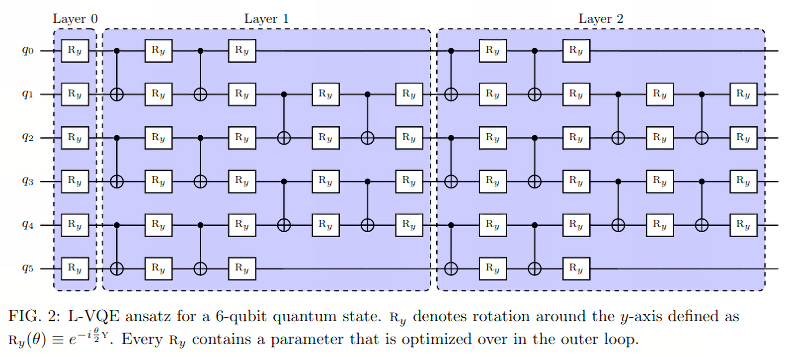

Гейты
Содержание
1 Описание лекции
Из этой лекции мы узнаем:
- Какие есть основные однокубитные гейты
- Как записывать многокубитные состояния
- Как конструировать многокубитные операторы
- Какие есть многокубитные гейты
- Первое знакомство с PennyLane
2 Введение
Квантовые гейты являются основными строительными блоками для любых квантовых схем, в том числе и тех, которые применяются для машинного обучения. Можно сказать, что это такой алфавит квантовых вычислений, он просто необходим, чтобы сходу понимать, например, что изображено на подобных схемах:

Рис. 1.: Картинка взята из Layer-VQE
3 Основные однокубитные гейты
В прошлый раз мы познакомились с операторами Паули, а также гейтом Адамара. Как для обычных квантовых алгоритмов, так и для QML-алгоритмов нужны и другие гейты, потому что одни только эти гейты не позволяют перейти во все возможные квантовые состояния. Теперь давайте посмотрим, какие еще однокубитные гейты часто применяются в квантовых вычислениях и квантовом машинном обучении.
3.1 T-гейт
T-гейт очень популярен в универсальных квантовых вычислениях. Его матрица имеет вид
\begin{align*} \hat{T} = \begin{bmatrix} 1 & 0 \\ 0 & \frac{1+i}{\sqrt{2}} \end{bmatrix} \end{align*}Любой однокубитный гейт можно аппроксимировать последовательностью гейтов Адамара и T-гейтов. Чем точнее требуется аппроксимация, тем длиннее будет аппроксимирующая последовательность.
Помимо важной роли в математике квантовых вычислений, гейт Адамара и T-гейт интересны тем, что именно на них построено большинство предложений по реализации квантовых вычислений с топологической защитой или с коррекцией ошибок. На сегодняшний день эти схемы реально пока не очень работают: никаких топологически защищённых кубитов продемонстрировано не было, а коррекция ошибок не выходит за пределы двух логических кубитов.
3.2 Гейты поворота вокруг оси
Поворотные гейты играют центральную роль в квантовом машинном обучении. Вспомним на секунду, как выглядят наши однокубитные состояния на сфере Блоха:

Рис. 2.: Сфера Блоха
Любой однокубитный гейт можно представить как вращение луча состояния \(\Psi\) на некоторый угол вокруг некоторой оси, проходящей через центр сферы Блоха.
Гейты \(\hat{RX}(\phi), \hat{RY}(\phi), \hat{RZ}(\phi)\) осуществляют поворот на определенный угол \(\phi\) вокруг соответствующей оси на сфере Блоха.
Давайте внимательно рассмотрим это на примере гейта \(\hat{RY}\).
3.2.1 Гейт \(\hat{RY}\)
Сам гейт определяется следующим образом:
\begin{align*} \hat{RY(\phi)} = \begin{bmatrix} \cos(\frac{\phi}{2}) & -\sin(\frac{\phi}{2}) \\ \sin(\frac{\phi}{2}) & \cos(\frac{\phi}{2}) \end{bmatrix} \end{align*}import numpy as np def ry(state, phi): return np.array([ [np.cos(phi / 2), -np.sin(phi / 2)], [np.sin(phi / 2), np.cos(phi /2)] ]) @ state
Запишем наше состояние \(\ket{0}\)
basis = np.array([1 + 0j, 0 + 0j]).reshape((2, 1))
Внимательно посмотрев на сферу Блоха, можно заметить, что повернув состояние из \(\ket{0}\) на \(\pi\) и измерив значение \(\hat{\sigma^z}\) мы получим 1, а повернув на \(-\pi\) мы получим 0:
def expval(state, op): return state.conj().T @ op @ state pauli_x = np.array([[0 + 0j, 1 + 0j], [1 + 0j, 0 + 0j]]) np.allclose(expval(ry(basis, np.pi / 2), pauli_x), 1.0) # True np.allclose(expval(ry(basis, -np.pi / 2), pauli_x), -1.0) # True
Убедимся также, что вращение на угол, пропорциональный \(2\pi\), не меняет результата измерения. Возьмем случайное состояние:
\begin{align*} \ket{\Psi} = \begin{bmatrix} 0.42 \\ \sqrt{1 - 0.42^2} \end{bmatrix} \end{align*}random_state = np.array([0.42 + 0j, np.sqrt(1 - 0.42**2) + 0j]).reshape((2, 1))
Измерим его по осям \(\mathbf{X}\) и \(\mathbf{Z}\), затем повернем его на угол \(2\pi\) и измерим снова:
pauli_z = np.array([[1 + 0j, 0 + 0j], [0 + 0j, 0j - 1]]) expval(random_state, pauli_z) # array([[-0.6472+0.j]]) expval(random_state, pauli_x) # array([[0.76232025+0.j]]) expval(ry(random_state, 2 * np.pi), pauli_z) # array([[-0.6472+0.j]]) expval(ry(random_state, 2 * np.pi), pauli_x) # array([[0.76232025+0.j]])
3.2.2 Другие гейты вращений
Аналогичным образом определяются гейты \(\hat{RX}\) и \(\hat{RZ}\):
\begin{align*} \hat{RX}(\phi) = \begin{bmatrix} \cos(\frac{\phi}{2}) & -i\sin(\frac{\phi}{2}) \\ -i\sin(\frac{\phi}{2}) & \cos(\frac{\phi}{2}) \end{bmatrix} \qquad \hat{RZ}(\phi) = \begin{bmatrix} e^{-\frac{i\phi}{2}} & 0 \\ 0 & e^{\frac{i\phi}{2}} \end{bmatrix} \end{align*}3.2.3 Общая форма записи однокубитных гейтов
В общем случае однокубитные гейты могут быть также записаны следующим образом:
\begin{align*} \large \hat{R}^\vec{n}(\alpha) = e^{-\frac{i\alpha\hat{\vec{\sigma}}\vec{n}}{2}}, \end{align*}где \(\alpha\) – это угол поворота, \(\vec{n}\) – единичный вектор в направлении оси поворота, а \(\hat{\vec{\sigma}} = \{\sigma^x, \sigma^y, \sigma^z\}\) – это вектор, составленный из операторов Паули. Если использовать покоординатную запись и \(\vec{n} = \{n_x, n_y, n_z\}\) задаёт ось вращения, то
\begin{align*} \large \hat{R}^\vec{n}(\alpha) = e^{-i\frac{\alpha}{2}\left(\hat{\sigma}^xn_x+\hat{\sigma}^yn_y+\hat{\sigma}^zn_z\right)}. \end{align*}Забегая вперед, можно сказать, что именно гейты вращений – это основа квантовых вариационных схем, главного инструмента этого курса.
3.3 Phase-shift гейт
Другой важный гейт – это так называемый phase-shift гейт, или \(\hat{U}_1\) гейт. Его матричная форма имеет следующий вид:
\begin{align*} \hat{U}_1(\phi) = \begin{bmatrix} 1 & 0 \\ 0 & e^{i\phi} \end{bmatrix} \end{align*}def u1(state, phi): return np.array([[1, 0], [0, np.exp(1j * phi)]]) @ state
Легко видеть, что с точностью до глобального фазового множителя, который ни на что не влияет, Phase-shift-гейт – это тот же \(\hat{RZ}(\phi)\). Забегая вперед, можно сказать, что этот гейт играет важную роль в квантовых ядерных методах.
3.4 \(\hat{U}_2\) и \(\hat{U}_3\)
Более редкие в QML гейты, которые однако все равно встречаются в статьях.
\begin{align*} \hat{U}_2(\phi, \lambda) = \frac{1}{\sqrt{2}}\begin{bmatrix} 1 & -e^{i\lambda} \\ e^{i\phi} & e^{i(\phi + \lambda)} \end{bmatrix} = \hat{U}_1(\phi + \lambda)\hat{RZ}(-\lambda)\hat{RY}(\frac{\pi}{2})\hat{RZ}(\lambda) \end{align*}Давайте убедимся в справедливости этого выражения:
def rz(state, phi): return np.array([[np.exp(-1j * phi / 2), 0], [0, np.exp(1j * phi / 2)]]) @ state def u2_direct(phi, l): return ( 1 / np.sqrt(2) * np.array([[1, -np.exp(1j * l)], [np.exp(1j * phi), np.exp(1j * (phi + l))]]) ) def u2_inferenced(phi, l): return ( u1(np.eye(2), phi + l) @ rz(np.eye(2), -l) @ ry(np.eye(2), np.pi / 2) @ rz(np.eye(2), l) ) np.allclose(u2_direct(np.pi / 6, np.pi / 3), u2_inferenced(np.pi / 6, np.pi / 3)) # True
Схожим образом определяется \(\hat{U}_3(\theta, \phi, \lambda)\):
\begin{align*} \hat{U}_3(\theta, \phi, \lambda) = \begin{bmatrix} \cos(\frac{\theta}{2}) & -e^{1j\lambda}\sin(\frac{\theta}{2}) \\ e^{1j\phi}\sin(\frac{\theta}{2}) & e^{1j(\phi + \lambda)}\cos(\frac{\theta}{2}) \end{bmatrix} = \hat{U}_1(\phi + \lambda)\hat{RZ}(-\lambda)\hat{RY}(\theta)\hat{RZ}(\lambda) \end{align*}Читатель может сам легко убедиться, что эти формы записи эквивалентны. Для этого надо написать примерно такой же код, какой мы писали раньше для \(\hat{U}_2\).
3.5 Еще пара слов об однокубитных гейтах
На этом мы завершаем обзор основных однокубитных гейтов. Маленькое замечание – гейты, связанные со свдигом фазы, никак не меняют состояние кубита, если оно сейчас \(\ket{0}\). Учитывая, что мы всегда предполагаем, что наше начальное состояние кубитов это именно \(\ket{0}\), то перед тем как применять, например, гейт \(\hat{U}_1\), рекомендуется применить гейт Адамара:
np.allclose(u1(basis, np.pi / 6), basis) # True h = 1 / np.sqrt(2) * np.array([[1 + 0j, 1 + 0j], [1 + 0j, 0j - 1]]) np.allclose(u1(h @ basis, np.pi / 6), h @ basis) # False
3.5.1 Единичный гейт
Самое последнее об однокубитных гейтах – это единичный гейт \(\hat{I}\):
\begin{align*} \hat{I} = \begin{bmatrix} 1 & 0 \\ 0 & 1 \end{bmatrix} \end{align*}i = np.eye(2, dtype=np.complex128) # array([[1.+0.j, 0.+0.j], # [0.+0.j, 1.+0.j]])
Этот гейт не делает с кубитом ровным счетом ничего. Но он все равно нам понадобится, когда мы будем конструировать многокубитные операторы!
4 Многокубитные состояния и гейты
Очевидно, что с одним кубитом мы ничего интересного (ну кроме генератора истинно-случайных чисел) мы не сделаем. Давайте для начала разберемся, как выглядят состояния для многокубитных систем.
4.1 Многокубитные состояния
В классическом компьютере 1 бит имеет два значения – 0 и 1; 2 бита имеют 4 – 00, 01, 10, 11; 3 бита 8 значений и т.д. По аналогии, состояние двух кубит – это вектор в пространстве \(\mathbf{C}^4\); состояние трех кубит, соответственно, в пространстве \(\mathbf{C}^8\) и т.д., то есть состояние \(N\) кубит описывается вектором размерности \(2^N\) в комплексном пространстве. Вероятности каждой из возможных битовых строк (\(0000...00\), \(0000...01\), \(0000...10\), и т.д.) получаются по методу Шрёдингера, который мы обсуждали в конце прошлой лекции:
\begin{align*} \mathbf{P}(\vec{s}) = | \bra{\Psi}\ket{\vec{s}} |^2 \end{align*}Напомню, что по сути мы должны отсортировать наши битовые строки в лексикографическом порядке и вероятность i-й битовой строки будет равна квадрату i-го элемента вектора \(\ket{\Psi}\).
4.2 Многокубитные операторы
Как мы уже обсуждали, квантовые операторы должны переводить наше состояние в новое состояние в том же пространстве и сохранять нормировку, а еще должны быть обратимыми. И, значит, оператор для состояния из \(N\) кубит – это эрмитова матрица размерности \(2^N \times 2^N\).
4.3 Конструирование многокубитных операторов
Прежде чем мы начнем обсуждать двухкубитные операторы, давайте рассмотрим другую ситуацию. Представим, что у нас есть состояние из 2-х кубит и мы хотим подействовать на первый кубит, например, оператором Адамара. Как же тогда нам написать такой двухкубитный оператор? Ок, мы действуем на 1-й кубит оператором, а что происходит со вторым кубитом? А ничего не происходит, и это эквивалентно тому, что мы действуем на 2-й кубит единичным оператором. А финальный оператор \(2^2 \times 2^2\) записывается через произведение Кронекера:
\begin{align*} \hat{H} \otimes \hat{I} = \frac{1}{\sqrt{2}}\begin{bmatrix} 1 & 1 \\ 1 & -1 \end{bmatrix} \otimes \begin{bmatrix} 1 & 0 \\ 0 & 1 \end{bmatrix} = \frac{1}{\sqrt{2}} \begin{bmatrix} \hat{I} & \hat{I} \\ \hat{I} & -\hat{I} \end{bmatrix} = \frac{1}{\sqrt{2}} \begin{bmatrix} 1 & 0 & 1 & 0 \\ 0 & 1 & 0 & 1 \\ 1 & 0 & -1 & 0 \\ 0 & 1 & 0 & -1 \end{bmatrix} \end{align*}Учитывая, что многокубитные состояния конструируются аналогичным образом через произведение Кронекера, мы можем явно убедиться в верности нашего вывода:
np.allclose(np.kron(h @ basis, basis), np.kron(h, i) @ np.kron(basis, basis)) # True
4.4 Наблюдаемые для многокубитных гейтов
Аналогичным образом можно сконструировать и наблюдаемые. Например, если мы хотим измерять одновременно два спина по оси \(\mathbf{Z}\), то наблюдаемая будет выглядеть так:
\begin{align*} \mathbf{ZZ} = \hat{\sigma^z} \otimes \hat{\sigma^z} = \begin{bmatrix} 1 & 0 & 0 & 0 \\ 0 & -1 & 0 & 0 \\ 0 & 0 & -1 & 0 \\ 0 & 0 & 0 & 1 \end{bmatrix} \end{align*}np.kron(basis, basis).conj().T @ np.kron(pauli_z, pauli_z) @ np.kron(basis, basis) # array([[1.+0.j]])
5 Основные двухкубитные гейты
Основные многокубитные гейты, которые предоставляют современные квантовые компьютеры, это двухкубитные гейты.
5.1 CNOT (CX)
Квантовый гейт контролируемого инвертирования – это гейт, который действует на два кубита – рабочий и контрольный. В зависимости от того, имеет ли контрольный кубит значение 1 или 0, этот гейт инвертирует или не инвертирует рабочий кубит.
Рис. 3.: CNOT (CX)
Иногда этот гейт также называют гейтом CX. В матричном виде этот оператор можно записать так:
\begin{align*} \hat{CNOT} = \begin{bmatrix} 1 & 0 & 0 & 0\\ 0 & 1 & 0 & 0\\ 0 & 0 & 0 & 1\\ 0 & 0 & 1 & 0 \end{bmatrix} \end{align*}cnot = (1 + 0j) * np.array( [ [1, 0, 0, 0], [0, 1, 0, 0], [0, 0, 0, 1], [0, 0, 1, 0], ] ) np.allclose(cnot @ np.kron(basis, basis), np.kron(basis, basis)) # True np.allclose( cnot @ np.kron(pauli_x @ basis, basis), np.kron(pauli_x @ basis, pauli_x @ basis) ) # True
Заметьте, тут мы воспользовались тем, что \(\hat{\sigma^x}\) работает так же, как инвертор кубитов – он превращает \(\ket{0}\) в \(\ket{1}\) и наоборот!
5.2 Гейты CY и CZ
Схожие по принципу гейты – это гейты \(\hat{CY}\) и \(\hat{CZ}\). В зависимости от значения управляющего кубита к рабочему кубиту применяют соответствующий оператор Паули:
\begin{align*} \hat{CY} = \begin{bmatrix} 1 & 0 & 0 & 0\\ 0 & 1 & 0 & 0\\ 0 & 0 & 0 & -i\\ 0 & 0 & i & 0 \end{bmatrix} \qquad \hat{CZ} = \begin{bmatrix} 1 & 0 & 0 & 0\\ 0 & 1 & 0 & 0\\ 0 & 0 & 1 & 0\\ 0 & 0 & 0 & -1 \end{bmatrix} \end{align*}5.3 Гейт iSWAP
Гейты \(\hat{CX}\), \(\hat{CY}\) и \(\hat{CZ}\) эквивалентны с точностью до однокубитных гейтов. Это означает, что любой из них можно получить добавив необходимые однокубитные гейты до и после другого гейта. Так, например,
\begin{align*} \hat{CZ} = \left(\hat{I}\times\hat{H}\right)\hat{CX}\left(\hat{I}\times\hat{H}\right). \end{align*}Этим свойством обладают отнюдь не все двухкубитные гейты! Например, таковым является гейт iSWAP:
\begin{align*} \mathrm{iSWAP} = \begin{bmatrix} 1 & 0 & 0 & 0\\ 0 & 0 & -i & 0\\ 0 & -i & 0 & 0\\ 0 & 0 & 0 & 1 \end{bmatrix} \end{align*}5.4 Гейт fSim
Для разных архитектур квантовых процессоров «естественный» гейт может выглядеть по-разному. Так, например, в квантовом процессоре Google Sycamore естественным является так называемый fermionic simulation gate, или fSim. Это двухпараметрическое семейство гейтов вида
\begin{align*} \mathrm{fSim}(\theta, \phi) = \begin{bmatrix} 1 & 0 & 0 & 0\\ 0 & \cos\theta & -i\sin\theta & 0\\ 0 & -i\sin\theta & \cos\theta & 0\\ 0 & 0 & 0 & e^{-i\phi} \end{bmatrix}. \end{align*}Впрочем, и fSim-гейт не является эквивалентным всему множеству двухкубитных гейтов. В общем случае, чем больше кубитов, тем сложнее будет выглядеть декомпозиция произвольного гейта на физически реализуемые в железе.
6 Первое знакомство с PennyLane
На сегодня существует уже достаточно много фреймворков для программирования квантовых компьютеров. Для целей этого курса мы будем использовать PennyLane. Он предоставляет высокоуровневый Python API и создан специально для решения задач квантового машинного обучения.
import pennylane as qml
6.1 Device
Для объявления квантового устройства используется класс Device. PennyLane поддерживает работу с большинством существующих сегодня квантовых компьютеров, но для целей курса мы будем запускать все наши программы лишь на самом простом симуляторе идеального квантового компьютера:
device = qml.device("default.qubit", 2)
Первый аргумент тут – указание устройства, а второй – число кубит.
6.2 QNode
Основной строительный блок в PennyLane – это qnode. Это функция, которая отмечена специальным декоратором и включает в себя несколько операций с кубитами. Результатом такой функции всегда является измерение. Напишем функцию, которая поворачивает первый кубит на \(45^o\), после чего измеряет оба кубита по оси \(\mathbf{Z}\).
6.2.1 Сначала на NumPy
state = np.kron(basis, basis) op = np.kron(ry(np.eye(2), np.deg2rad(45)), np.eye(2, dtype=np.complex128)) measure = np.kron(pauli_z, pauli_z) (op @ state).conj().T @ measure @ (op @ state) # array([[0.70710678+0.j]])
6.2.2 Теперь через QNode
@qml.qnode(device) def test(angle): qml.RY(angle, wires=0) return qml.expval(qml.PauliZ(0) @ qml.PauliZ(1)) test(np.deg2rad(45)) # 0.7071067811865475
7 Заключение
Это последняя вводная лекция, где мы сами писали операторы и операции на чистом NumPy. Это могло казаться скучным, но зато должно помочь лучше понять ту математику, которая лежит под капотом у квантовых вычислений. Дальше мы будем пользоваться только PennyLane и будет отдельная лекция, которая рассказывает, как работать с этим фреймворком.
- Мы знаем что такое кубит
- Мы понимаем линейную алгебру, которая описывает квантовые вычисления
- Мы понимаем, как можно сконструировать нужный нам оператор и как применить его
- Мы знаем, что такое измерение и наблюдаемые
Теперь мы готовы к тому, чтобы знакомиться с квантовыми вариационными схемами и переходить непосредственно к построению моделей квантового машинного обучения!
8 Задачи
- Как связаны ось и угол вращения на сфере Блоха с собственными значениями и собственными векторами матрицы однокубитного гейта? Для этого найдите собственные векторы и собственные значения гейта \(R^\vec{n}\left(\alpha\right)\).
- Вокруг какой оси и на какой угол вращает состояние гейт Адамара?
- Гейт SWAP меняет кубиты местами. Его унитарная матрица имеет вид
Попробуйте составить последовательность гейтов, реализующую \(\mathrm{SWAP}\), из гейтов \(\mathrm{iSWAP}\), \(\hat{CZ}\) и \(\hat{RZ}(\phi)\).